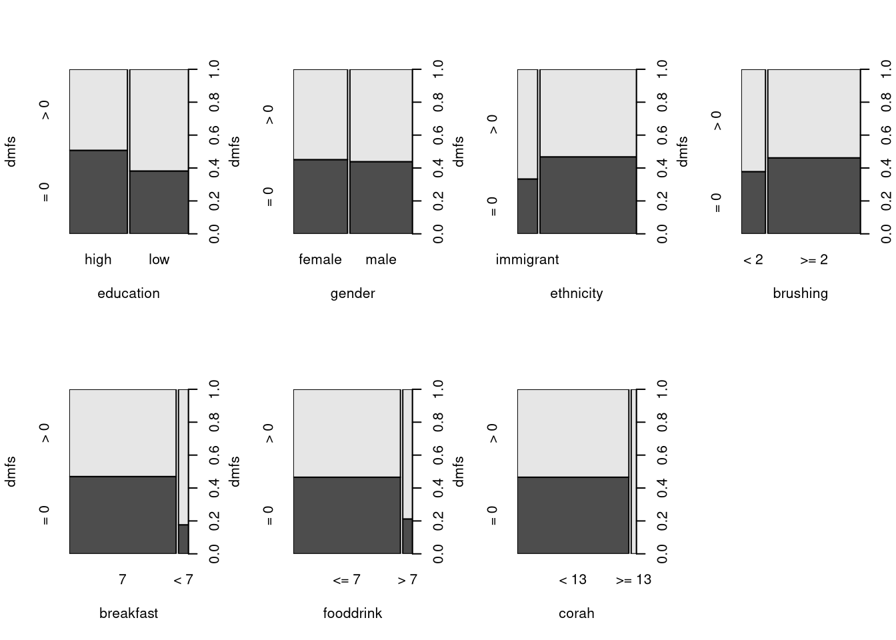
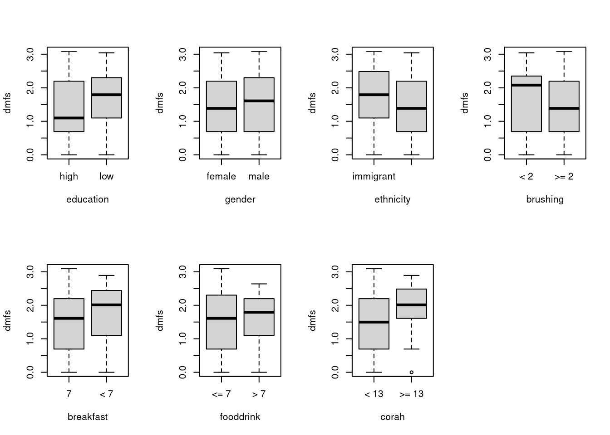
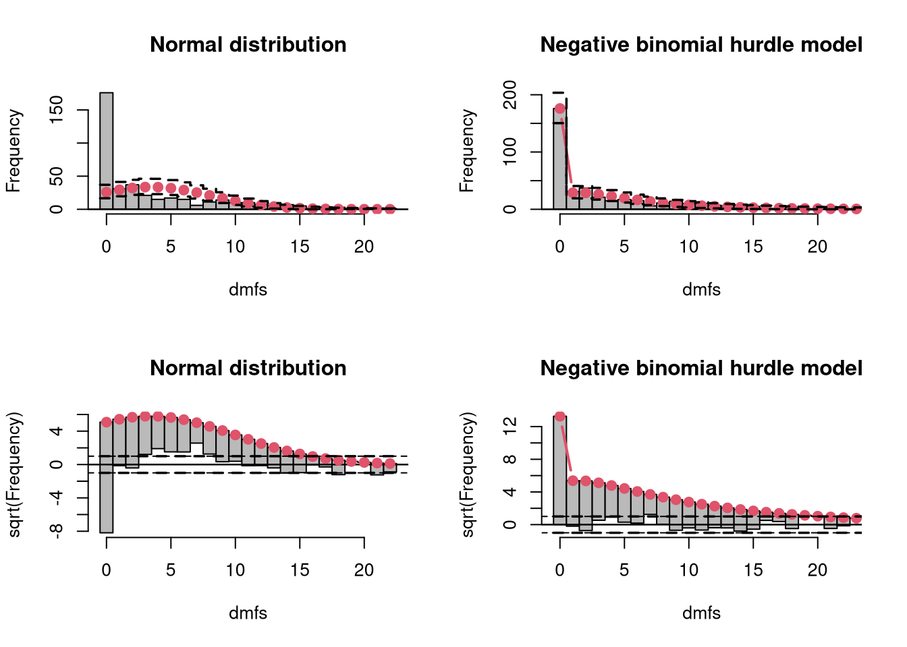

library("countreg")
## Load data and omit NAs and one dmfs outlier
data("OralHealthNL", package = "countreg")
head(OralHealthNL) dmfs education gender ethnicity brushing breakfast fooddrink corah
1 1 low male native >= 2 7 <= 7 <NA>
2 0 high male native >= 2 7 <= 7 <NA>
3 6 high female native >= 2 7 <= 7 < 13
4 9 low female native >= 2 7 > 7 < 13
5 0 high female native < 2 7 <= 7 <NA>
6 0 low male native >= 2 7 <= 7 < 13OralHealthNL <- na.omit(subset(OralHealthNL, dmfs < 40))
## Visualization: Is dmfs > 0?
par(mfrow = c(2, 4))
plot(factor(dmfs > 0, levels = c(TRUE, FALSE), labels = c("> 0", "= 0")) ~ .,
data = OralHealthNL, ylab = "dmfs")
## Count: How large is log(dmfs) given dmfs > 0?
par(mfrow = c(2, 4))
plot(log(dmfs) ~ ., data = OralHealthNL, subset = dmfs > 0, ylab = "dmfs")
## Relevel the factor variables so that non-risk group is the reference
OralHealthNL <- transform(OralHealthNL,
ethnicity = relevel(ethnicity, ref = "native"),
brushing = relevel(brushing, ref = ">= 2"),
breakfast = relevel(breakfast, ref = "7")
)
## Count regression models
zinb <- zeroinfl(dmfs ~ ., data = OralHealthNL, dist = "negbin")
zip <- zeroinfl(dmfs ~ ., data = OralHealthNL, dist = "poisson")
hnb <- hurdle(dmfs ~ ., data = OralHealthNL, dist = "negbin")
hp <- hurdle(dmfs ~ ., data = OralHealthNL, dist = "poisson")
## Model comparisons (Table 3)
## Information criteria
cbind(AIC(hnb, zinb, hp, zip), BIC = BIC(hnb, zinb, hp, zip)[, 2]) df AIC BIC
hnb 17 1710.477 1778.161
zinb 17 1712.954 1780.638
hp 16 1969.529 2033.232
zip 16 1969.571 2033.274Likelihood ratio test
Model 1: dmfs ~ .
Model 2: dmfs ~ .
#Df LogLik Df Chisq Pr(>Chisq)
1 17 -838.24
2 16 -968.76 -1 261.05 < 2.2e-16 ***
---
Signif. codes: 0 '***' 0.001 '**' 0.01 '*' 0.05 '.' 0.1 ' ' 1Likelihood ratio test
Model 1: dmfs ~ .
Model 2: dmfs ~ .
#Df LogLik Df Chisq Pr(>Chisq)
1 17 -839.48
2 16 -968.79 -1 258.62 < 2.2e-16 ***
---
Signif. codes: 0 '***' 0.001 '**' 0.01 '*' 0.05 '.' 0.1 ' ' 1
Model 1
Class: zeroinfl
Call: zeroinfl(formula = dmfs ~ ., data = OralHealthNL, dist = "negbin")
Model 2
Class: hurdle
Call: hurdle(formula = dmfs ~ ., data = OralHealthNL, dist = "negbin")
Variance test
H0: Model 1 and Model 2 are indistinguishable
H1: Model 1 and Model 2 are distinguishable
w2 = 0.001, p = 0.382
Non-nested likelihood ratio test
H0: Model fits are equal for the focal population
H1A: Model 1 fits better than Model 2
z = -2.511, p = 0.994
H1B: Model 2 fits better than Model 1
z = -2.511, p = 0.006015## Coefficients, odds ratios, and rate ratios
## Negative binomial hurdle model (Table 3)
summary(hnb)
Call:
hurdle(formula = dmfs ~ ., data = OralHealthNL, dist = "negbin")
Pearson residuals:
Min 1Q Median 3Q Max
-1.0564 -0.6754 -0.4458 0.3831 4.2094
Count model coefficients (truncated negbin with log link):
Estimate Std. Error z value Pr(>|z|)
(Intercept) 1.29286 0.13110 9.861 < 2e-16 ***
educationlow 0.30434 0.12956 2.349 0.01883 *
gendermale 0.05017 0.12481 0.402 0.68772
ethnicityimmigrant 0.33572 0.15078 2.227 0.02598 *
brushing< 2 0.37770 0.14319 2.638 0.00835 **
breakfast< 7 0.13758 0.18510 0.743 0.45732
fooddrink> 7 -0.08250 0.19674 -0.419 0.67497
corah>= 13 0.38452 0.22072 1.742 0.08148 .
Log(theta) 0.51214 0.18669 2.743 0.00608 **
Zero hurdle model coefficients (binomial with logit link):
Estimate Std. Error z value Pr(>|z|)
(Intercept) -0.32742 0.19784 -1.655 0.09794 .
educationlow 0.40429 0.21393 1.890 0.05877 .
gendermale -0.04384 0.21348 -0.205 0.83729
ethnicityimmigrant 0.48796 0.29112 1.676 0.09371 .
brushing< 2 0.26244 0.26812 0.979 0.32766
breakfast< 7 1.25730 0.47601 2.641 0.00826 **
fooddrink> 7 0.98360 0.45653 2.155 0.03120 *
corah>= 13 16.14670 865.49661 0.019 0.98512
---
Signif. codes: 0 '***' 0.001 '**' 0.01 '*' 0.05 '.' 0.1 ' ' 1
Theta: count = 1.6689
Number of iterations in BFGS optimization: 17
Log-likelihood: -838.2 on 17 Df 2.5 % 97.5 %
count_(Intercept) 2.8176305 4.710609
count_educationlow 1.0516938 1.747675
count_gendermale 0.8232799 1.342851
count_ethnicityimmigrant 1.0410117 1.879962
count_brushing< 2 1.1019136 1.931618
count_breakfast< 7 0.7983455 1.649344
count_fooddrink> 7 0.6261915 1.354050
count_corah>= 13 0.9530647 2.263966
zero_(Intercept) 0.4890990 1.062205
zero_educationlow 0.9851189 2.278641
zero_gendermale 0.6298696 1.454358
zero_ethnicityimmigrant 0.9206978 2.882191
zero_brushing< 2 0.7686977 2.198867
zero_breakfast< 7 1.3831085 8.937661
zero_fooddrink> 7 1.0928891 6.542907
zero_corah>= 13 0.0000000 Inf## Negative binomial zero-inflated model (Table 4)
summary(hnb)
Call:
hurdle(formula = dmfs ~ ., data = OralHealthNL, dist = "negbin")
Pearson residuals:
Min 1Q Median 3Q Max
-1.0564 -0.6754 -0.4458 0.3831 4.2094
Count model coefficients (truncated negbin with log link):
Estimate Std. Error z value Pr(>|z|)
(Intercept) 1.29286 0.13110 9.861 < 2e-16 ***
educationlow 0.30434 0.12956 2.349 0.01883 *
gendermale 0.05017 0.12481 0.402 0.68772
ethnicityimmigrant 0.33572 0.15078 2.227 0.02598 *
brushing< 2 0.37770 0.14319 2.638 0.00835 **
breakfast< 7 0.13758 0.18510 0.743 0.45732
fooddrink> 7 -0.08250 0.19674 -0.419 0.67497
corah>= 13 0.38452 0.22072 1.742 0.08148 .
Log(theta) 0.51214 0.18669 2.743 0.00608 **
Zero hurdle model coefficients (binomial with logit link):
Estimate Std. Error z value Pr(>|z|)
(Intercept) -0.32742 0.19784 -1.655 0.09794 .
educationlow 0.40429 0.21393 1.890 0.05877 .
gendermale -0.04384 0.21348 -0.205 0.83729
ethnicityimmigrant 0.48796 0.29112 1.676 0.09371 .
brushing< 2 0.26244 0.26812 0.979 0.32766
breakfast< 7 1.25730 0.47601 2.641 0.00826 **
fooddrink> 7 0.98360 0.45653 2.155 0.03120 *
corah>= 13 16.14670 865.49661 0.019 0.98512
---
Signif. codes: 0 '***' 0.001 '**' 0.01 '*' 0.05 '.' 0.1 ' ' 1
Theta: count = 1.6689
Number of iterations in BFGS optimization: 17
Log-likelihood: -838.2 on 17 Df 2.5 % 97.5 %
count_(Intercept) 2.87728799 4.7399839
count_educationlow 1.05358981 1.7408558
count_gendermale 0.83032458 1.3392020
count_ethnicityimmigrant 1.03700891 1.8491811
count_brushing< 2 1.08222465 1.8760869
count_breakfast< 7 0.81383157 1.6536956
count_fooddrink> 7 0.63596745 1.3590801
count_corah>= 13 1.01247274 2.3333949
zero_(Intercept) 0.67229117 1.6908065
zero_educationlow 0.43459181 1.1554917
zero_gendermale 0.66228485 1.7408712
zero_ethnicityimmigrant 0.32595659 1.2220538
zero_brushing< 2 0.42567249 1.4411974
zero_breakfast< 7 0.06835275 0.8785863
zero_fooddrink> 7 0.08307571 1.0765754
zero_corah>= 13 0.00000000 Inf## Rootograms (top left: Figure 1)
if(require("topmodels")) {
par(mfrow = c(2, 2))
rootogram(lm(OralHealthNL$dmfs ~ 1),
style = "standing", scale = "raw",
breaks = 0:23 - 0.5, xlim = c(-0.5, 22.5),
xlab = "dmfs", main = "Normal distribution")
rootogram(hnb,
style = "standing", scale = "raw",
width = 1, xlim = c(-0.5, 22.5),
xlab = "dmfs", main = "Negative binomial hurdle model")
rootogram(lm(OralHealthNL$dmfs ~ 1),
breaks = 0:23 - 0.5, xlim = c(-0.5, 22.5),
xlab = "dmfs", main = "Normal distribution")
abline(h = c(-1, 1), lty = 2)
rootogram(hnb,
width = 1, xlim = c(-0.5, 22.5),
xlab = "dmfs", main = "Negative binomial hurdle model")
abline(h = c(-1, 1), lty = 2)
par(mfrow = c(1, 1))
}

## Number of zeros
c(dmfs = sum(OralHealthNL$dmfs == 0),
ZINB = sum(predict(zinb, type = "density", at = 0)),
Hurdle = sum(predict(hnb, type = "density", at = 0))) dmfs ZINB Hurdle
176.0000 177.1231 176.0000 ## Correlation of observations and fitted means
cor(cbind(dmfs = OralHealthNL$dmfs,
ZINB = fitted(zinb), HNB = fitted(hnb))) dmfs ZINB HNB
dmfs 1.0000000 0.348679 0.3490063
ZINB 0.3486790 1.000000 0.9997870
HNB 0.3490063 0.999787 1.0000000## Bias-reduced logistic regression (due to separation)
if(require("brglm2")) {
br <- glm(
factor(dmfs == 0, levels = c(TRUE, FALSE), labels = c("= 0", "> 0")) ~ .,
data = OralHealthNL, family = binomial, method = "brglmFit")
print(coeftest(br), digits = 1)
}
z test of coefficients:
Estimate Std. Error z value Pr(>|z|)
(Intercept) -0.32 0.20 -1.6 0.10
educationlow 0.40 0.21 1.9 0.06 .
gendermale -0.04 0.21 -0.2 0.84
ethnicityimmigrant 0.47 0.29 1.6 0.10
brushing< 2 0.26 0.27 1.0 0.34
breakfast< 7 1.19 0.46 2.6 0.01 *
fooddrink> 7 0.93 0.45 2.1 0.04 *
corah>= 13 3.33 1.48 2.3 0.02 *
---
Signif. codes: 0 '***' 0.001 '**' 0.01 '*' 0.05 '.' 0.1 ' ' 1